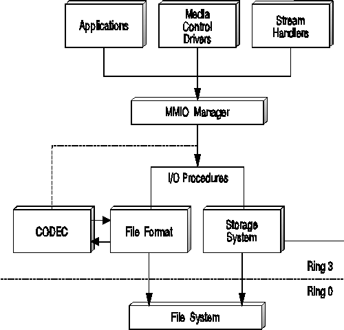

Multimedia input/output (MMIO) services provides both I/O and CODEC procedures. I/O procedures are message-based handlers, which direct the input and output associated with reading and writing to different types of storage systems or file formats. Applications and the MMIO subsystem communicate to I/O procedures (DLL files) through the use of MMIO messages. When MMIO receives a request from an application through a function call, the MMIO Manager sends a predefined message for that operation to the I/O procedure responsible for that particular file format or storage system. In turn, the I/O procedure performs operations based on the messages it receives from the MMIO Manager or an application.
These messages are designed for efficient communications to all I/O procedures. The I/O procedures, however, must be able to process the messages or pass them on to a child I/O procedure. For example, if an I/O procedure receives a message requesting the compression of data object, the I/O procedure must be able to process the message, or pass the message to a CODEC procedure. The following figure illustrates the interaction of I/O and CODEC procedures in the MMIO subsystem.
The MMIO Manager calls the following types of procedures:
File Format